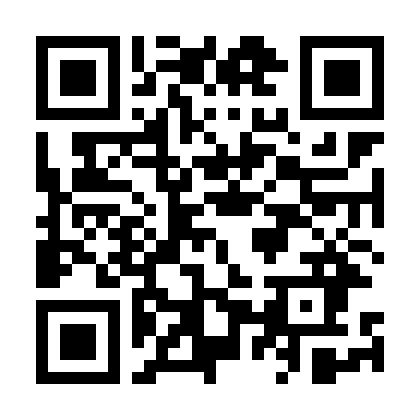

Ta’lim loyihasi — QR
Saytga ötiş uçun QR-kodni skaner qiling

https://alisaidm.github.io/talimloyihasi/
Muammo 1https://alisaidm.github.io/talimloyihasi/problem1/
Muammo 2https://alisaidm.github.io/talimloyihasi/problem2/
Muammo 3https://alisaidm.github.io/talimloyihasi/problem3/
Muammo 4https://alisaidm.github.io/talimloyihasi/problem4/
Muammo 5https://alisaidm.github.io/talimloyihasi/problem5/
Muammo 6https://alisaidm.github.io/talimloyihasi/problem6/
Alisaid Öroqov · «Kelajak lideri»